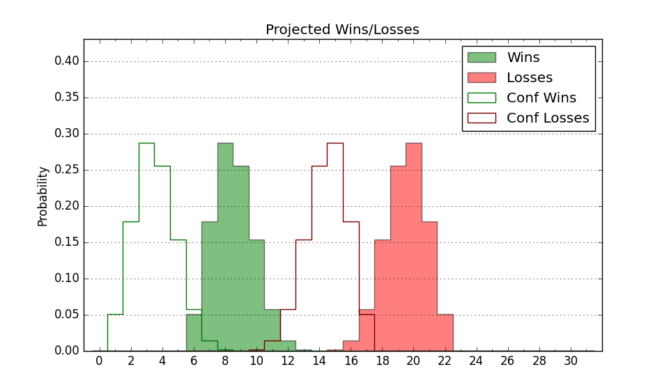

| Home | Game Probabilities | Conferences | Preseason Predictions | Odds Charts | NCAA Tournament |
| City: | State University, Arkansas | |
| Conference: | Sun Belt (14th)
| |
| Record: | 1-7 (Conf) 6-12 (Overall) | |
| Ratings: | Comp.: -14.5 (323rd) Net: -15.0 (324th) Off: 94.8 (302nd) Def: 109.9 (317th) SoR: 0.0 (185th) |
| Remaining | ||||||
|---|---|---|---|---|---|---|
| Date | Opponent | Win Prob | Pred. | |||
| 1/26 | @ Southern Miss (96) | 5.3% | L 56-75 | |||
| 1/28 | @ Appalachian St. (197) | 13.5% | L 56-67 | |||
| 2/2 | South Alabama (195) | 34.4% | L 61-66 | |||
| 2/4 | Coastal Carolina (296) | 56.5% | W 69-67 | |||
| 2/9 | @ Texas St. (203) | 14.3% | L 55-66 | |||
| 2/11 | @ Georgia Southern (233) | 19.2% | L 57-66 | |||
| 2/16 | Troy (137) | 24.4% | L 61-68 | |||
| 2/18 | Georgia St. (238) | 45.4% | L 60-61 | |||
| 2/22 | @ Louisiana Lafayette (124) | 7.8% | L 61-78 | |||
| 2/24 | @ Louisiana Monroe (303) | 29.9% | L 62-67 | |||
| Previous | Game Score | |||||
| Date | Opponent | Win Prob | Result | Off | Def | Net |
| 11/12 | @LSU (135) | 8.6% | L 52-61 | -7.2 | 14.4 | 7.2 |
| 11/18 | @UC Davis (169) | 11.3% | L 60-75 | -3.1 | 0.4 | -2.7 |
| 11/22 | Tennessee Martin (231) | 44.3% | W 70-64 | 2.0 | 8.7 | 10.7 |
| 11/25 | Prairie View A&M (288) | 54.4% | L 59-67 | -7.0 | -5.1 | -12.1 |
| 12/1 | Mississippi Valley St. (358) | 84.9% | W 58-38 | 4.0 | 20.9 | 24.9 |
| 12/6 | @Central Arkansas (343) | 41.7% | L 67-72 | -4.8 | -4.8 | -9.6 |
| 12/9 | @Air Force (125) | 7.8% | L 55-80 | 0.9 | -25.2 | -24.3 |
| 12/14 | Southeast Missouri St. (254) | 49.6% | W 68-61 | -1.4 | 14.6 | 13.2 |
| 12/19 | Alabama St. (346) | 73.9% | W 72-65 | 12.7 | -4.1 | 8.6 |
| 12/22 | Little Rock (332) | 67.5% | W 77-75 | 12.3 | -18.8 | -6.5 |
| 12/29 | @Old Dominion (174) | 11.5% | W 60-57 | 6.2 | 14.5 | 20.7 |
| 12/31 | Louisiana Monroe (303) | 59.3% | L 72-84 | 9.6 | -32.0 | -22.4 |
| 1/5 | @South Alabama (195) | 13.3% | L 45-63 | -22.8 | 7.2 | -15.6 |
| 1/7 | @Troy (137) | 8.7% | L 54-66 | -6.5 | 13.4 | 6.9 |
| 1/12 | Texas St. (203) | 36.2% | L 58-61 | -9.1 | 2.9 | -6.2 |
| 1/14 | Southern Miss (96) | 16.1% | L 57-74 | -6.7 | 0.6 | -6.1 |
| 1/19 | Louisiana Lafayette (124) | 22.2% | L 71-80 | 7.9 | -8.1 | -0.2 |
| 1/21 | Marshall (77) | 13.7% | L 78-87 | 12.3 | -4.0 | 8.2 |
| Stats & Trends | |||||
|---|---|---|---|---|---|
| Current | Day | Week | Month | Season | |
| Composite | -14.5 | -0.6 | -0.4 | -2.7 | -7.1 |
| Comp Rank | 323 | -4 | -2 | -22 | -70 |
| Net Efficiency | -15.0 | -0.6 | -0.2 | -1.7 | -- |
| Net Rank | 324 | -5 | -2 | -20 | -- |
| Off Efficiency | 94.8 | +0.4 | +1.6 | -1.2 | -- |
| Off Rank | 302 | -3 | +8 | -32 | -- |
| Def Efficiency | 109.9 | -1.1 | -1.8 | -0.5 | -- |
| Def Rank | 317 | -7 | -15 | -3 | -- |
| SoS Rank | 324 | -4 | +16 | +31 | -- |
| Exp. Wins | 8.5 | -0.1 | -0.5 | -2.0 | -5.2 |
| Exp. Conf Wins | 3.5 | -0.1 | -0.5 | -2.0 | -4.7 |
| Conf Champ Prob | 0.0 | -- | -- | -0.0 | -4.4 |

| Advanced Stats | ||
|---|---|---|
| Stat | Value | Rank |
| Off Eff FG % | 0.458 | 325 |
| Off Ast Ratio | 0.140 | 191 |
| Off ORB% | 0.265 | 186 |
| Off TO Rate | 0.156 | 155 |
| Off FT Ratio | 0.309 | 192 |
| Def Eff FG % | 0.531 | 281 |
| Def Ast Ratio | 0.151 | 246 |
| Def ORB% | 0.250 | 119 |
| Def TO Rate | 0.151 | 231 |
| Def FT Ratio | 0.365 | 288 |